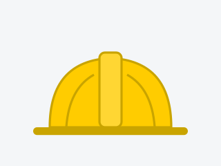

Acerca de mí
Conocé mi formación y cómo combino la seguridad e higiene con nuevas herramientas para lograr objetivos de manera más eficiente.
Ver más
Alexander Zerr | Seguridad e Higiene
Acompaño a empresas a ordenar su gestión de seguridad, reducir riesgos reales en el trabajo y cumplir con la normativa vigente.
Este sitio es mi proyecto para el curso de Desarrollo Web: un primer paso para integrar nuevas herramientas digitales a mi desarrollo profesional.
Solicitar asesoramiento
Brindo asesoramiento en seguridad e higiene adaptado a la actividad de cada empresa:
Conocé mi formación y cómo combino la seguridad e higiene con nuevas herramientas para lograr objetivos de manera más eficiente.
Ver másDiagnóstico y evaluación de riesgos, gestión documental y cumplimiento legal adaptados a la actividad de cada empresa.
Ver serviciosArtículos sobre prevención, normativa y herramientas que facilitan la gestión de la seguridad.
Leer novedadesEscribime y coordinamos un relevamiento de las condiciones de trabajo de tu empresa.
Ir a contacto